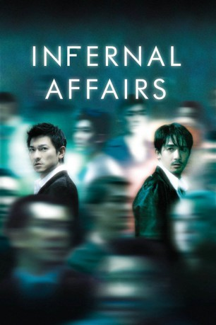

#2836 Infernal Affairs 1
 
 IMDB-Wertung: 8.1 / 10
IMDB-Wertung: 8.1 / 10  Metascore: 75
Metascore: 75 
Lau Kin Ming, ein aufstrebender junger Cop, der an vorderster Front bei der Bekämpfung illegaler Banden eingesetzt wird, hat die besten Karten bei seinem Vorgesetzten Wong Chi Shing. Und er ist an den internen Ermittlungen der Dienstaufsicht betreff Kriminalität in den eigenen Reihen beteiligt. Chen Wing Yan ist ein abgebrühter Ganove, mit Sinn für ausgefallene Tricks. Er genießt mehr Vertrauen bei seinem Boss Hon Sam als jeder andere Killer oder Handlanger und soll jetzt endlich den Polizeispitzel zur Strecke bringen, der die Bande unterwandert hat und jede kriminelle Handlung im Kern sabotiert. Die Realität sieht jedoch ganz anders aus - Lau ist der Gangster und Chen in Wirklichkeit der Undercover-Cop. Als sich die Machtprobe zwischen Gesetz und Triaden dramatisch verhärtet, wird ein direktes Duell unvermeidlich.
Jahr: 2002
Dauer: 100 Minuten
FSK: 12
Land: Hong-Kong Studio: MC-OneTonspuren:
Untertitel: Deutsch, Englisch,
Auflösung: 1080p (1912x832) Größe: 8192 MB
Genre: Thriller, Krimi, Mystery
Regisseur: Wai-Keung Lau, Alan Mak
Drehbuch: Alan Mak, Felix Chong
Soundtrack: Kwong Wing Chan, Ronald Ng
Darsteller:
 Andy Lau als Inspector Lau Kin Ming
Andy Lau als Inspector Lau Kin Ming Tony Chiu Wai Leung als Chen Wing Yan
Tony Chiu Wai Leung als Chen Wing Yan Anthony Chau-Sang Wong als SP Wong Chi Shing
Anthony Chau-Sang Wong als SP Wong Chi Shing Eric Tsang als Hon Sam
Eric Tsang als Hon Sam- Sammi Cheng als Mary
 Edison Chen als Young Lau Kin Ming
Edison Chen als Young Lau Kin Ming Shawn Yue als Young Chan Wing Yan
Shawn Yue als Young Chan Wing Yan Courtney Wu als Stereo Shop Owner
Courtney Wu als Stereo Shop Owner- Kelly Chen als Dr. Lee Sum Yee
- Elva Hsiao als May
 Chapman To als Tsui Wai-keung
Chapman To als Tsui Wai-keung Ka Tung Lam als Inspector B
Ka Tung Lam als Inspector B- Ting Yip Ng als Inspector Cheung
 Dion Lam als Del Piero
Dion Lam als Del Piero- Chi Keung Wan als Officer Leung
- Hui Kam Fung als Cadet School Principal
 Tony Ho als Suspect
Tony Ho als Suspect- Hin-Wai Au als Elephant
- Eric Tin Cheung Li als Double 8
- Wong Yin Keung als CIB Team
- Lam Po Loy als CIB Team
- Cheng Wing Yee als CIB Team
- Man Kee Yiu als CIB Team
- Yuen Waj Ho als CIB Team
- Mak Wai Kwok als CIB Team
- Kui Mei Yee als CIB Team
- Chi-Wang Wong als CIB Team
- Lee Yip Kin als Sam's Follower
- Chung Wai Ho als Sam's Follower
- Sai Tang Yu als Sam's Follower
- Kam Hung Wong als Sam's Follower
- So Wai Nam als Sam's Follower
- Chi-Wai Lai als Sam's Follower
- Leung Ho Kei als Sam's Follower
- Tze Ming Lee als Sam's Follower
- Hui On Tat als Officer Chan
- Ho Wing Ling als Superintendent
- Lee Wah Chu als Chief Inspector
- Cheung Yuk Sun als Cadet School Instructor
- Leung Chiu Yi als May's Daughter
- Chaucharew Wichai als Sunny, Thai Drug Dealer
Datei: X:\HD-Eastern-Collections\Infernal Affairs\Infernal Affairs 1 (2002, FSK12, 1912x832).mkv seit 22.12.2015
Festplatte: HD Eastern+Western
 Alle Filme aus Gruppe 'HD-Eastern-Collections\Infernal Affairs'
Alle Filme aus Gruppe 'HD-Eastern-Collections\Infernal Affairs'